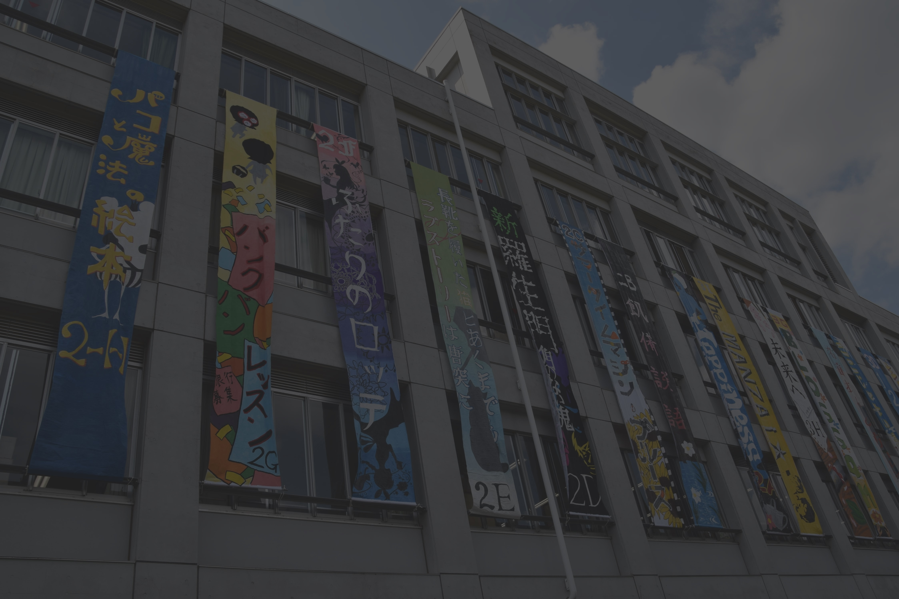
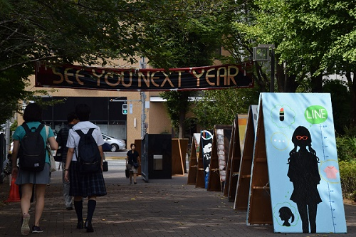
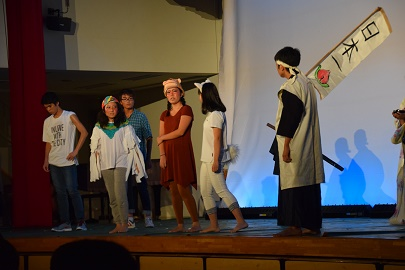
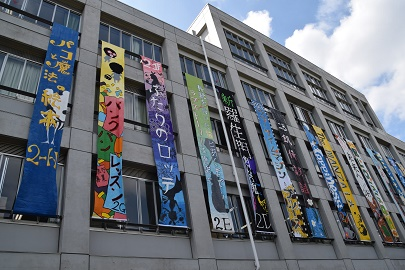
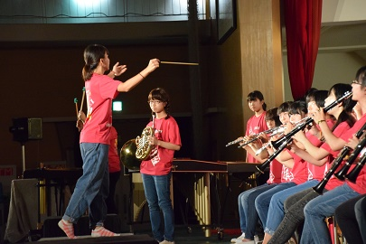

第73回戸山祭
今年のスローガンは「」
戸山祭とは
戸山祭とは、毎年9月に東京都立戸山高等学校で開催され、今年で73回を数える伝統ある文化祭です。ほかの文化祭とは一味違うところといえば、戸山祭は、「問題提起の場である」というところ。クラスが1つの問題提起をし、それを展示・演劇・映画を通して伝えるという、戸山独自の文化を持ちます。一年展示

第一学年は各HR教室で展示作品を出品しています。各クラスがそれぞれの問題提起を軸に、様々な調査や実験を行い、その結果をまとめて展示します。各クラスの工夫を凝らした展示作品をぜひご覧ください。
二年演劇

第二学年は演劇作品を体育館で上演します。説明説明せつめいせつめい説明説明せつめいせつめい説明説明せつめいせつめい説明説明せつめいせつめい説明説明せつめいせつめい説明説明せつめいせつめい
三年映画

説明説明せつめいせつめい説明説明せつめいせつめい説明説明せつめいせつめい説明説明せつめいせつめい説明説明せつめいせつめい説明説明せつめいせつめい説明説明せつめいせつめい説明説明せつめいせつめい説明説明せつめいせつめい説明説明
その他の団体

説明説明せつめいせつめい説明説明せつめいせつめい説明説明せつめいせつめい説明説明せつめいせつめい説明説明せつめいせつめい説明説明せつめいせつめい説明説明せつめいせつめい説明説明せつめいせつめい
校長挨拶
今年も戸山祭の季節がやってきました。私は今年着任したので、実はまだ実際の戸山祭を見たことはないのですが、１年は展示、２年は演劇、３年は映画制作と、それぞれやることが決まっていて、しかも各クラスが一つの問題を提起し、自分たちなりの答えを展示・演劇・映画を通じて多くの人々に伝えていくとなれば、内輪だけで勝手に盛り上がる「お祭り騒ぎ」の文化祭とは一味違うものになることが大いに期待できます。ぜひとも戸山生の意地と底力を見せてください。 ところで、本校は今年創立１３０周年目の記念すべき年を迎えます。現在の戸山祭も長い歴史と伝統の中で作られてきたものですが、「伝統」とは古き良きものを受け継ぎながら、新しい手法も取り入れて挑戦していく姿勢であると言われています。生徒諸君は今年の戸山祭でどんな挑戦をしたでしょうか。これは私から生徒諸君に向けた問題提起だと思ってください。 最後になりますが、戸山祭の開催に当たり、お世話になった多くの皆様に心より感謝申し上げるとともに、ご来場の皆様には戸山祭を大いに楽しんでいただければ幸いです。委員長挨拶
暑さの残る毎日が続いていますが、今年も戸山祭の季節がやってまいりました。戸山祭は多くの方に「堅い」と思われがちです。実際、近年の多くの文化祭からは取り残されて「堅い」との表現が妥当と言えるかもしれません。しかし私たちが70年以上続けてきた「問題提起」を重視した文化祭の形式は、他では気がつかないなにかに出会えるかもしれません。最後になりますが、戸山祭は、本校の自主自立の精神の元に生徒主体の行事として成り立っています。ここから戸山生の思いを感じていただければ幸いです。概要
日時
| 日付 | 開催時間 | タイムテーブル |
|---|---|---|
| 9月 9日（土） | 9:00～16:30 | 1日目のタイムテーブル |
| 9月10日（日） | 9:00～16:30 | 2日目のタイムテーブル |
| 9月11日（月） | 9:00～13:30 | 3日目のタイムテーブル |
{kind=link}
{kind=link}
{kind=link}
会場
| 会場名 | 住所 |
|---|---|
| 都立戸山高等学校 | 東京都新宿区戸山3-19-1 |
アクセス
- 西早稲田駅 3番出口より徒歩2分
- 東新宿駅より徒歩13分
- 高田馬場駅より徒歩12分
- 高田馬場駅前からバス「九段下行き」「学習院女子大学前」下車すぐ
ご来場の際のお願い
- 上履きまたはスリッパをご持参ください。
- 戸山高校敷地内は全面禁煙です。
- お食事の際は階段広場、1階戸山カフェ、2階休憩所へお願いします。
- 体調不良、怪我の際には、1階保健室へお越しください。
- ゴミの分別にご協力ください。ゴミ箱は各所に設置してあります。
- 体育館では、入り口で配布される青色の体育館専用スリッパをご使用ください。
- 体育館内は飲食禁止です。入場前に十分な水分補給を行ってください。
- 演劇鑑賞の方は、２階中央階段正面の渡り廊下を通って入場してください。
- ブラスバンド部の公演にお越しの方は、一度校舎を出て、係の誘導に従って体育館へお入りください。